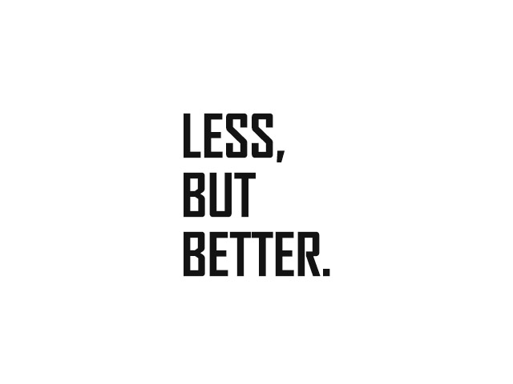

더 인간적인 환경을 위한 디자인
지난 60여 년간 저의 디자인 철학은 변하지 않았으며, 여전히 이것이 옳다고 믿고 있습니다. 제품의 중심엔 언제나 인간이 있지만, 디자인은 사회의 변화와 함께하고, 그것은 디자이너의 책임 변화로 이어집니다.
오늘날 디자인은 ‘조금 다른 것’ 또는 ‘눈에 띄도록 가공된 것’의 의미로 자주 오용됩니다. 디자인과 성장 지향적 소비사회와의 관계는 날이 갈수록 깊어지고 있습니다. 저는 디자인의 의미가 더 이상 퇴색하지 않고, 오히려 우리가 세상을 더 깊이 이해하고 공존하며 개선해가는 과정을 대변했으면 합니다.
삶의 터전을 보존하려는 것은 우리의 열망입니다. 세상을 가득 채운 물리적, 시각적 공해는 시급한 대책을 필요로 합니다. 좋은 디자인이란 가능한 최소한의 디자인입니다. 우리는 순수함과 간결함으로 되돌아가기를 갈망하며, 이것은 우리를 탁월함으로 이끌어줄 열쇠입니다.
저의 신조인 ‘더 적게, 하지만 더 좋게(Less, But Better)’는 다음과 같은 질문을 내포합니다. 우리에게 항상 새로운 제품이 필요할까요? 산적해 있는 경제 및 환경 문제 앞에서 디자인은 근본적 의미 변화를 앞두고 있습니다.
디자인은 표면적, 치장적 형태를 버리고 소비 지향적 사회를 넘어서는 대안을 고려해야 합니다. 혁신적인, 유용한, 심미적인, 직관적인, 정직한, 절제된, 견고한, 세심한, 환경친화적인, 그리고 최소한의 디자인은 제가 30여 년 전 정립했고 여전히 변치 않은 디자인의 10가지 원칙입니다.
하지만 이것들을 모두 충족하는 것만으로 좋은 디자인이라 볼 수는 없습니다. 좋은 디자인은 언제나 명확하며, 그것이 속한 환경 전반을 개선하고, 또한 미래를 가늠하는 척도가 됩니다.
저는 실무에 몸담았던 기간 동안 운 좋게도 혁신적이고, 책임감 있고, 도전의 위험도 기꺼이 감수하는 훌륭한 기업들과 함께 일할 수 있었습니다. 그들과 저는 새로운 세상에 대한 같은 비전을 갖고 있었습니다. 우리는 과도하게 시선을 사로잡지 않으면서도 훌륭한 사용 경험과 지속할 수 있는 아름다움을 통해 스스로 설득력을 갖는 제품을 만들고 싶었습니다.
내일의 세상은 오늘의 디자인 학도인 여러분이 만들 것입니다. 이는 커다란 기회이자 과제이며, 책임감을 의미합니다. 지난 50여 년간 저는 제품 디자이너와 대학교수로서의 길을 걸어왔습니다. 과거에 우리는 더 나은 세상을 갈망했습니다. 디자이너는 언제나 세상을 개선하고자 하는 야망을 갖고 있어야 합니다. 세상은 결코 스스로를 개선하지 않으니까요.

오늘날 우리에게 주어진 가장 큰 과제는 환경보호와 잘못된 소비형태의 개선입니다. 미래의 디자이너에게는 더 큰 과제가 주어질 것입니다. 디자이너가 개별 제품만 고려해서는 이제 부족하며 새로운 행동방식과 문화적 가치, 그리고 문화 간의 관계도 고려해야 합니다. 이를 위해서는 독단성과 자위성을 초월하는 디자인 정신이 필요합니다. 저는 디자인의 핵심이 되는 다섯 가지 측면에 관해 이야기하고자 합니다.